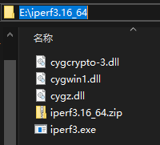
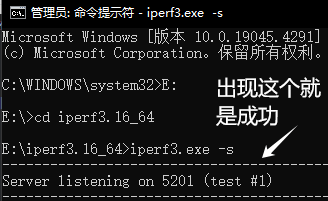

网络测试工具iperf3
iPerf3是用于主动测试IP网络上最大可用带宽的工具。它支持时序、缓冲区、协议（TCP，UDP，SCTP与IPv4和IPv6）有关的各种参数。对于每次测试，它都会详细的带宽报告，延迟抖动和数据包丢失。
下载
iperf官网：https://iperf.fr/
iperf官网下载地址（所有版本都可以在这个网址中下载）：https://iperf.fr/iperf-download.php
iperf的命令文档：https://iperf.fr/iperf-doc.php
使用
错误打开方式：双击这个iperf3.exe是打不开会闪退的
正确打开方式：命令提示符（cmd）运行iperf3.exe
1、下载解压后的文件放置到一个全英文路径里。比如：放到E盘，那么这个文件夹的路径就为：E:\iperf-3.16-win64。
2、打开命令提示符，输入“E:”，跳转到E盘。再输入“ cd \iperf-3.16_64”进入程序文件夹。即为成功。后面可以使用做服务端启动或是客户端启动。见下面步骤：
服务端
在服务端使用，打开iperf3.exe程序后，输入如下命令作为服务端接受数据包。
1 | iperf3.exe -s |
客户端
作为客户端使用，同样的操作打开iperf3.exe，然后用如下命令发包到服务端做测试。注意：127.0.0.1是演示用的，实际是需要填真实的服务器的ip（也就是上一步服务端的电脑ip）。
1 | iperf3.exe -c 127.0.0.1 |
命令
详细命令参数，执行，iperf3 -h，可以查看所有的命令信息。以下是中文信息， iPerf 3.1.2 支持的所有参数：
1 | -p, --port #，Server 端监听、Client 端连接的端口号； |
设置服务器端口
运行iperf3在服务器端，如果需要指定的端口号加上-p port
1 | iperf3 -s -p <端口号> |
设置客户端数据流
运行iperf3在客户端，设置多个并行数据流-P
1 | iperf3 -c <serverIP> -P streams |
服务端访问客户端
运行iperf3在客户端，反向测试（服务器端发送数据到客户端）
1 | iperf3 -c serverIP -R |
使用UDP协议
运行iperf3在客户端，使用UDP协议，并设置使用的测试带宽
1 | iperf3 -c serverIP -b 1000M -t 60 -d |
退出测试
终止或者退出测试，快捷键Ctrl + c
参考
[网络测试工具]iperf3极简使用教程windows（iperf3.1.3-windows-64bit 命令行版本(cmd）使用心得）_iperf-3.1.3-win64-CSDN博客